setwd("~/Documents/Developer/vsriram24.github.io/posts/multiomics-fa")
library(ggplot2)
library(tidyverse)
library(data.table)
library(MOFA2)
library(MOFAdata)In this week’s blog, I’ll be providing a brief overview on multiomic data and the utility of factor analysis. I will also summarize a tutorial and case study developed by Alex Gurbych from blackthorn.ai that highlights how to perform factor analysis using the Bioconductor package MOFA2. You can review Alex’s original tutorial here. With context out of the way, let’s get started!
1. Introduction
In the following workflow, we will derive biological insights from a multiomic dataset through the application of factor analysis with the MOFA2 package. Before we get into our case study example, let’s go over some definitions.
1.1. Multiomics
Multiomics refers to a biological analysis approach that considers multiple data modalities concurrently to study a biological system holistically. The individual data modalities of multiomic analysis, also known as ’omes, are comprised of large-scale data and typically summarize the entire set of biomolecules for an organism. Some examples of individual ’omes include the genome, proteome, transcriptome, epigenome, and phenome.
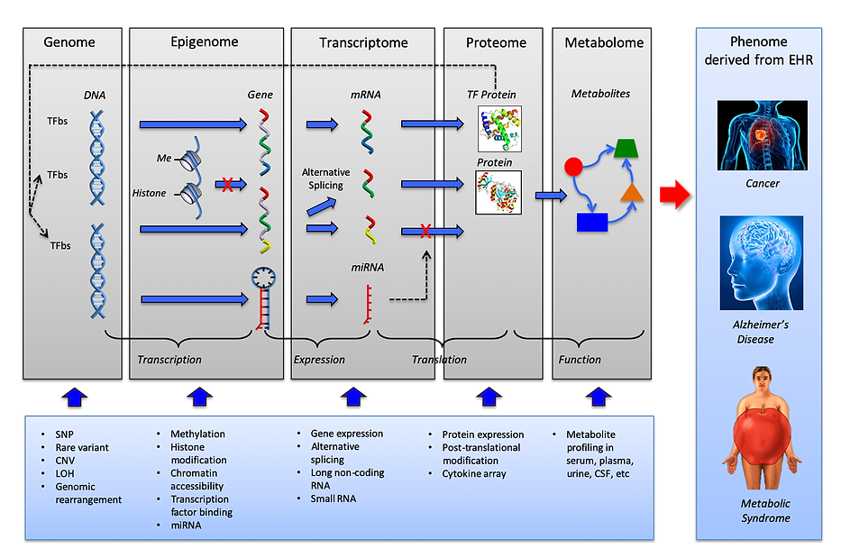
Multiomic studies can lend themselves to the improved characterization of biological processes across molecular layers. By integrating multiple ’omes together, researchers can analyze complex biological big data to find novel associations between biological entities, pinpoint relevant biomarkers, and build elaborate markers of disease and physiology.
Motivated by this improved ability to represent the underlying biology of a system, multiomic profiling has been increasingly applied across a variety of biological domains, including cancer biology, regulatory genomics, microbiology, and host‐pathogen biology. A common aim of these applications is to characterize heterogeneity between samples, as manifested in one or several of the data modalities. Multiomic profiling is particularly appealing if the relevant axes of variation are not known beforehand, and hence may be missed by studies that consider a single data modality or targeted approaches. One approach to capture the relevant axes of variation in a biological system is factor analysis.
1.2. Factor analysis
Factor analysis is a statistical method that summarizes the variability across observed, correlated variables in a smaller set of variables. These newly generated variables correspond to the ‘factors’ of the original data - they are generated by determining linear combinations of the observed variables and adding small fixed deviations. Correlations between the factors of an input set of predictors and an output response variable can reveal previously unobserved latent axes of variation that affect the response of the data. Thus, the main goal of factor analysis is to identify hidden variables and evaluate their correlations with output variables of interest.
1.3. MOFA2
Given the utility of factor analysis for the identification of relevant axes of variation in biological systems, it becomes particularly beneficial to have a simple method for integrating and analyzing multiomic data in this manner - Multiomic Factor Analysis (MOFA) offers one such option.
MOFA is a probabilistic factor model that performs unsupervised integration of multiple modalities of omics data and discovers the principal axes of variation in multiomic data sets. Intuitively, MOFA can be viewed as a versatile and statistically rigorous generalization of principal component analysis (PCA) for multiomics data. MOFA infers a set of hidden factors that capture biological and technical sources of variability. It disentangles axes of heterogeneity that are shared across multiple modalities as well as those specific to individual data modalities. The learnt factors enable a variety of downstream analyses, including identification of sample subgroups, data imputation and the detection of outlier samples. The inferred factor loadings can be sparse, thereby facilitating the linkage between the factors and the most relevant molecular features. Importantly, MOFA disentangles to what extent each factor is unique to a single data modality or is manifested in multiple modalities, thereby revealing shared axes of variation between the different omics layers. Once trained, the model output can be used for a range of downstream analyses, including visualization, clustering, and classification of samples in the low‐dimensional spaces spanned by the factors.
You can read more about the MOFA2 package on its Bioconducter documentation page here.
2. Dataset description
With background on multiomics and factor analysis covered, let’s jump into our case study: multiomics factor analysis for a dataset of cancer patients.
For our example dataset, we will make use of a cohort of 200 patients diagnosed with chronic lymphocytic leukemia (CLL). The CLL dataset can be downloaded for free from here.
The CLL dataset we will be using consists of four data modalities:
genomics (somatic mutations)
epigenomics (DNA methylation)
transcriptomics (RNA-seq)
phenotypes (drug response).
Around 40% of the feature values are absent.
Let’s start by importing the required libraries:
Now, we import the CLL dataset. Data are stored as a list of matrices with features as rows and samples as columns. We can use the lapply function to get the number of features and samples for each “’ome” in our data.
utils::data("CLL_data")
lapply(
CLL_data,
dim
)$Drugs
[1] 310 200
$Methylation
[1] 4248 200
$mRNA
[1] 5000 200
$Mutations
[1] 69 2003. Model training
With our data uploaded into our environment, we can begin to fit a model. We start by creating a new MOFA model for our data using the create_mofa function:
MOFAobject <- create_mofa(CLL_data)We can visualize the number of features and samples in our data as well as missing values using the plot_data_overview function:
plot_data_overview(MOFAobject)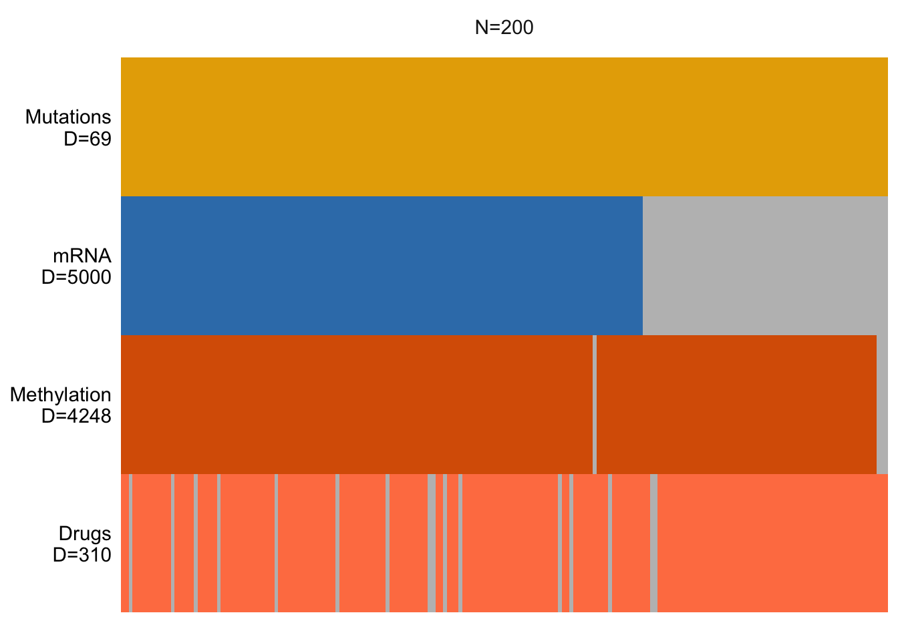
In the above figure, D tells us the number of features for each data modality, while N represents the number of samples. Missing data are represented by gray bars.
With our model initialized, we can set various options to customize the way that we train it on our data. In our case, we will specify that we want to generate 15 factors, and that we want to set the maximum number of model training iterations to be 100.
data_opts <- get_default_data_options(MOFAobject)
model_opts <- get_default_model_options(MOFAobject)
model_opts$num_factors <- 15
train_opts <- get_default_training_options(MOFAobject)
train_opts$seed <- 1
train_opts$save_interrupted <- TRUE
train_opts$maxiter = 100
train_opts$convergence_mode <- "slow"Finally, with our options specified, we can go ahead and train our model.
MOFAobject <- prepare_mofa(
MOFAobject,
training_options = train_opts,
model_options = model_opts,
data_options = data_opts
)Checking data options...Checking training options...Checking model options...MOFAobject_trained <- run_mofa(
MOFAobject,
outfile = "MOFA2_CLL_trained.hdf5"
)Warning: Output file MOFA2_CLL_trained.hdf5 already exists, it will be replacedConnecting to the mofapy2 python package using reticulate (use_basilisk = FALSE)...
Please make sure to manually specify the right python binary when loading R with reticulate::use_python(..., force=TRUE) or the right conda environment with reticulate::use_condaenv(..., force=TRUE)
If you prefer to let us automatically install a conda environment with 'mofapy2' installed using the 'basilisk' package, please use the argument 'use_basilisk = TRUE'
#########################################################
### __ __ ____ ______ ###
### | \/ |/ __ \| ____/\ _ ###
### | \ / | | | | |__ / \ _| |_ ###
### | |\/| | | | | __/ /\ \_ _| ###
### | | | | |__| | | / ____ \|_| ###
### |_| |_|\____/|_|/_/ \_\ ###
### ###
#########################################################
use_float32 set to True: replacing float64 arrays by float32 arrays to speed up computations...
Successfully loaded view='Drugs' group='group1' with N=200 samples and D=310 features...
Successfully loaded view='Methylation' group='group1' with N=200 samples and D=4248 features...
Successfully loaded view='mRNA' group='group1' with N=200 samples and D=5000 features...
Successfully loaded view='Mutations' group='group1' with N=200 samples and D=69 features...
Model options:
- Automatic Relevance Determination prior on the factors: False
- Automatic Relevance Determination prior on the weights: True
- Spike-and-slab prior on the factors: False
- Spike-and-slab prior on the weights: False
Likelihoods:
- View 0 (Drugs): gaussian
- View 1 (Methylation): gaussian
- View 2 (mRNA): gaussian
- View 3 (Mutations): gaussian
######################################
## Training the model with seed 1 ##
######################################
ELBO before training: -19615100.54
Iteration 1: time=0.58, ELBO=-3087652.10, deltaELBO=16527448.442 (84.25880055%), Factors=15
Iteration 2: time=0.55, Factors=15
Iteration 3: time=0.52, Factors=15
Iteration 4: time=0.56, Factors=15
Iteration 5: time=0.50, Factors=15
Iteration 6: time=0.42, ELBO=-2873482.21, deltaELBO=214169.888 (1.09186230%), Factors=15
Iteration 7: time=0.44, Factors=15
Iteration 8: time=0.49, Factors=15
Iteration 9: time=0.47, Factors=15
Iteration 10: time=0.40, Factors=15
Iteration 11: time=0.54, ELBO=-2867923.23, deltaELBO=5558.977 (0.02834029%), Factors=15
Iteration 12: time=0.47, Factors=15
Iteration 13: time=0.41, Factors=15
Iteration 14: time=0.39, Factors=15
Iteration 15: time=0.53, Factors=15
Iteration 16: time=0.50, ELBO=-2865486.12, deltaELBO=2437.114 (0.01242468%), Factors=15
Iteration 17: time=0.63, Factors=15
Iteration 18: time=0.97, Factors=15
Iteration 19: time=1.05, Factors=15
Iteration 20: time=0.54, Factors=15
Iteration 21: time=0.53, ELBO=-2863390.64, deltaELBO=2095.482 (0.01068300%), Factors=15
Iteration 22: time=0.46, Factors=15
Iteration 23: time=0.44, Factors=15
Iteration 24: time=0.59, Factors=15
Iteration 25: time=0.46, Factors=15
Iteration 26: time=0.46, ELBO=-2862445.15, deltaELBO=945.491 (0.00482022%), Factors=15
Iteration 27: time=0.49, Factors=15
Iteration 28: time=0.55, Factors=15
Iteration 29: time=0.58, Factors=15
Iteration 30: time=0.38, Factors=15
Iteration 31: time=0.31, ELBO=-2861818.14, deltaELBO=627.006 (0.00319655%), Factors=15
Iteration 32: time=0.39, Factors=15
Iteration 33: time=0.31, Factors=15
Iteration 34: time=0.34, Factors=15
Iteration 35: time=0.46, Factors=15
Iteration 36: time=0.41, ELBO=-2861358.43, deltaELBO=459.708 (0.00234364%), Factors=15
Iteration 37: time=0.54, Factors=15
Iteration 38: time=0.32, Factors=15
Iteration 39: time=0.36, Factors=15
Iteration 40: time=0.30, Factors=15
Iteration 41: time=0.45, ELBO=-2860993.31, deltaELBO=365.123 (0.00186144%), Factors=15
Iteration 42: time=0.28, Factors=15
Iteration 43: time=0.29, Factors=15
Iteration 44: time=0.30, Factors=15
Iteration 45: time=0.30, Factors=15
Iteration 46: time=0.25, ELBO=-2860681.72, deltaELBO=311.589 (0.00158852%), Factors=15
Iteration 47: time=0.25, Factors=15
Iteration 48: time=0.24, Factors=15
Iteration 49: time=0.28, Factors=15
Iteration 50: time=0.26, Factors=15
Iteration 51: time=0.27, ELBO=-2860392.99, deltaELBO=288.726 (0.00147196%), Factors=15
Iteration 52: time=0.29, Factors=15
Iteration 53: time=0.26, Factors=15
Iteration 54: time=0.26, Factors=15
Iteration 55: time=0.26, Factors=15
Iteration 56: time=0.30, ELBO=-2860101.84, deltaELBO=291.150 (0.00148432%), Factors=15
Iteration 57: time=0.29, Factors=15
Iteration 58: time=0.25, Factors=15
Iteration 59: time=0.29, Factors=15
Iteration 60: time=0.39, Factors=15
Iteration 61: time=0.26, ELBO=-2859789.25, deltaELBO=312.592 (0.00159363%), Factors=15
Iteration 62: time=0.26, Factors=15
Iteration 63: time=0.28, Factors=15
Iteration 64: time=0.28, Factors=15
Iteration 65: time=0.23, Factors=15
Iteration 66: time=0.29, ELBO=-2859453.86, deltaELBO=335.396 (0.00170989%), Factors=15
Iteration 67: time=0.27, Factors=15
Iteration 68: time=0.25, Factors=15
Iteration 69: time=0.25, Factors=15
Iteration 70: time=0.24, Factors=15
Iteration 71: time=0.28, ELBO=-2859111.11, deltaELBO=342.743 (0.00174734%), Factors=15
Iteration 72: time=0.26, Factors=15
Iteration 73: time=0.25, Factors=15
Iteration 74: time=0.28, Factors=15
Iteration 75: time=0.27, Factors=15
Iteration 76: time=0.26, ELBO=-2858782.22, deltaELBO=328.898 (0.00167676%), Factors=15
Iteration 77: time=0.25, Factors=15
Iteration 78: time=0.28, Factors=15
Iteration 79: time=0.31, Factors=15
Iteration 80: time=0.29, Factors=15
Iteration 81: time=0.29, ELBO=-2858489.40, deltaELBO=292.820 (0.00149283%), Factors=15
Iteration 82: time=0.29, Factors=15
Iteration 83: time=0.28, Factors=15
Iteration 84: time=0.28, Factors=15
Iteration 85: time=0.27, Factors=15
Iteration 86: time=0.33, ELBO=-2858247.17, deltaELBO=242.225 (0.00123489%), Factors=15
Iteration 87: time=0.28, Factors=15
Iteration 88: time=0.25, Factors=15
Iteration 89: time=0.33, Factors=15
Iteration 90: time=0.26, Factors=15
Iteration 91: time=0.28, ELBO=-2858055.75, deltaELBO=191.417 (0.00097587%), Factors=15
Iteration 92: time=0.29, Factors=15
Iteration 93: time=0.26, Factors=15
Iteration 94: time=0.26, Factors=15
Iteration 95: time=0.27, Factors=15
Iteration 96: time=0.32, ELBO=-2857907.84, deltaELBO=147.911 (0.00075407%), Factors=15
Iteration 97: time=0.26, Factors=15
Iteration 98: time=0.25, Factors=15
Iteration 99: time=0.27, Factors=15
#######################
## Training finished ##
#######################
Warning: Output file MOFA2_CLL_trained.hdf5 already exists, it will be replaced
Saving model in MOFA2_CLL_trained.hdf5...Our model has been successfully trained!
4. Postprocessing
4.1. Add sample metadata
Now that we have trained our model on our data, we can incorporate metadata from the input dataset to evaluate correlations between our different ’omes and additional variables. Let’s get data for age, sex, death status, and treatment status:
Age: age in years
Died: (T/F) did the patient die?
Sex: (M/F)
treatedAfter: (T/F) was the patient treated after?
# Load sample metadata
CLL_metadata <- fread("ftp://ftp.ebi.ac.uk/pub/databases/mofa/cll_vignette/sample_metadata.txt")
# Add sample metadata to the model
samples_metadata(MOFAobject_trained) <- CLL_metadata4.2. Correlation analysis of factors
In order for our model to work accurately, we must ensure that the factors that we have generated are not correlated with one another. If we observe significant correlations between factors, we either used too many factors or performed and insufficient amount of normalization. We can visualize correlations across factors using the plot_factor_cor function.
plot_factor_cor(MOFAobject_trained)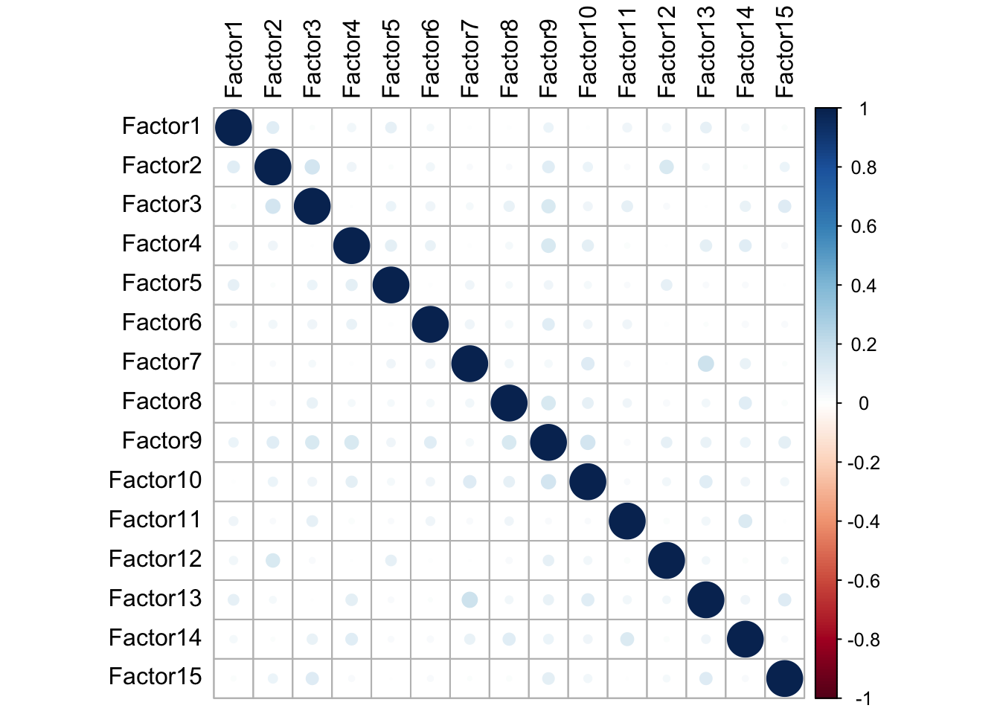
We can see from our figure that our generated factors show no significant correlations with one another.
5. Variance Breakdown
5.1. Explained variance decomposition by factor
We can use the plot_variance_explained function to determine how much of the variance in each of our individual data modalities is explained by each of our factors:
plot_variance_explained(
MOFAobject_trained,
max_r2 = 15
)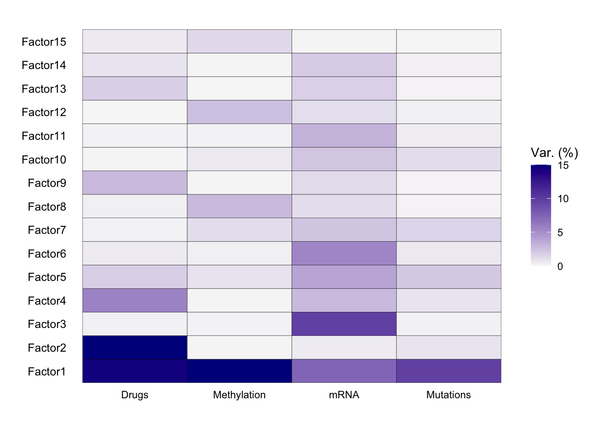
From our explained variance plot, we can see that Factor 1 explains a high amount of variance across all four of our data modalities. Factor 2 explained a high amount of variance for drug response, Factor 3 explains a high amount of variance for drug response, transcriptomics, and genomics, and Factor 4 explains a high amount of variance for transcriptomics.
5.2. Explained variance per omic modality
We can also use the plot_variance_explained function to determine the amount of variance that is explained across our four data modalities given all 15 factors in our model.
plot_variance_explained(
MOFAobject_trained,
plot_total = T
)[[2]]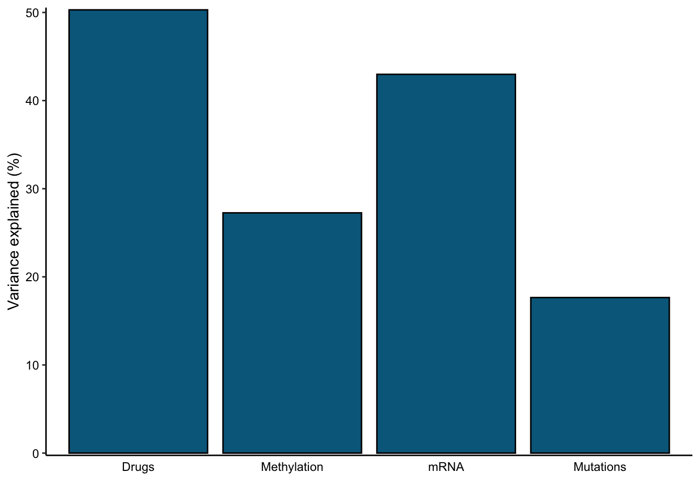
Here, we can see that the phenotypic and transcriptomic modalities have more variance explained by our model than the genomic or epigenomic modalities.
6. Factor association analysis
We can now compare our generated factors to metadata from our input data to see if we capture any associations with variables related to CLL. Here, we generate correlation plots using the correlate_factors_with_covariates function.
correlate_factors_with_covariates(
MOFAobject_trained,
covariates = c("Gender","died","age", "treatedAfter"),
plot = "log_pval"
)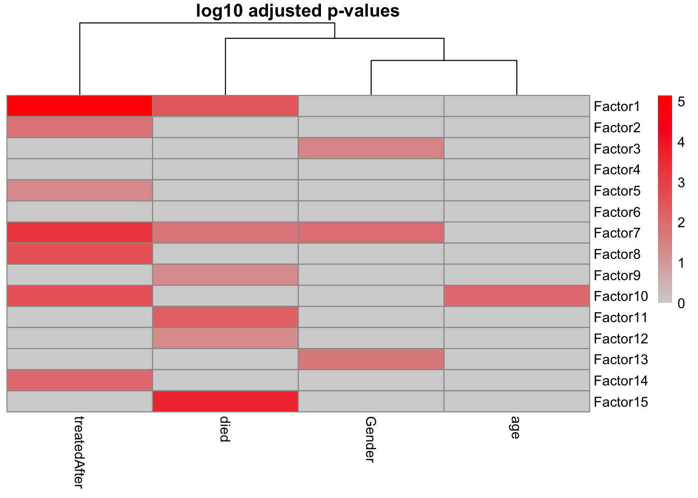
It appears that most of our factors have an association with at least one of our covariates under consideration.
7. Zooming in on an individual factor
7.1. Factor values
We can make use of the plot_factor function to evaluate how the data points in our dataset are distributed with respect to a factor of choice.
plot_factor(
MOFAobject_trained,
dodge = TRUE,
add_violin = TRUE,
factors=c(1, 15)
)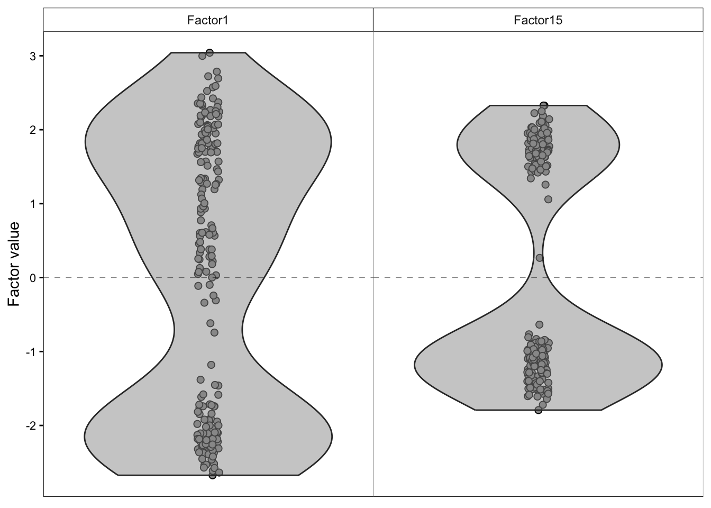
7.2. Factor 1’s association with the genomic data modality
We can use the plot_weights function to determine how different factors are weighted with respect to the features in our data. In the following graph, we focus on the influence of Factor 1 on features present in the genomic data modality. Features with a higher weight represent a stronger association with the factor of interest.
plot_weights(
MOFAobject_trained,
view = "Mutations",
factor=1,
nfeatures = 15,
scale = T
)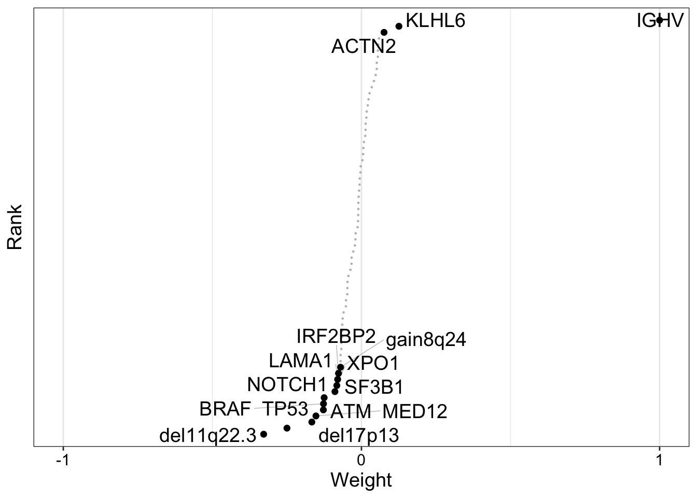
From this graph, we can see that most features have a weight of 0 with respect to Factor 1, indicating a lack of association with the factor. However, IGHV (immunoglobulin heavy chain variable) has a weight close to 1 with respect to Factor 1. Indeed, mutations in the genetic region are a main clinical marker for CLL!
The plot_top_weights function lets us visualize this same output, sorted by absolute value of the weight:
plot_top_weights(
MOFAobject_trained,
view = "Mutations",
nfeatures = 15,
scale = T,
factor=1
)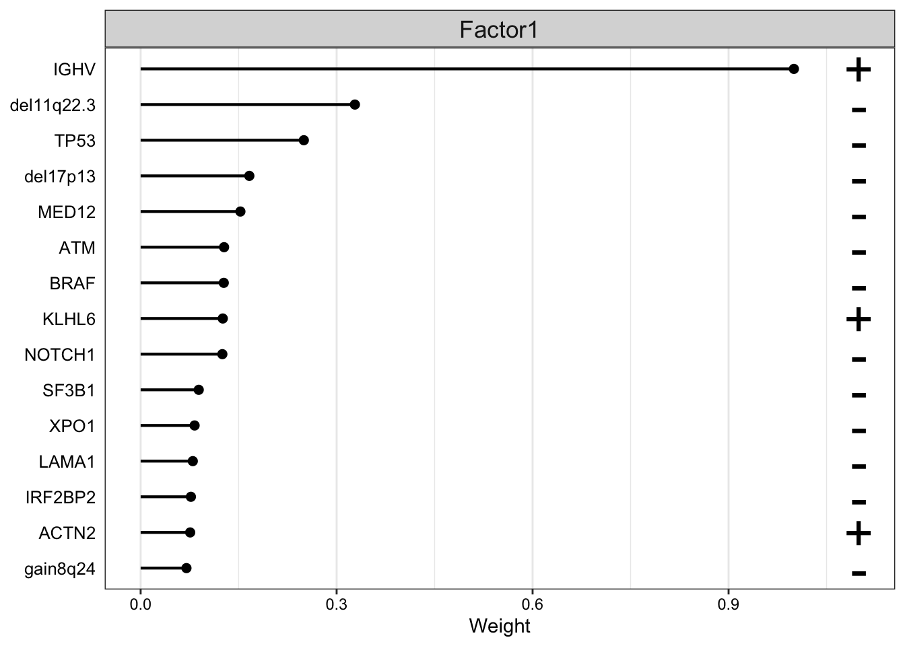
Once again, we can see that the weight for IGHV with respect to Factor 1 far exceeds the weights for any other genomic features in our dataset.
Based on these results, we’d expect to see that samples that have a high positive value for Factor 1 will have IGHV mutations. To confirm this hypothesis, let’s plot the distribution of factor 1 values, colored by IGHV mutation status:
plot_factor(
MOFAobject_trained,
dodge = TRUE,
add_violin = TRUE,
color_by = "IGHV",
factors = c(1)
)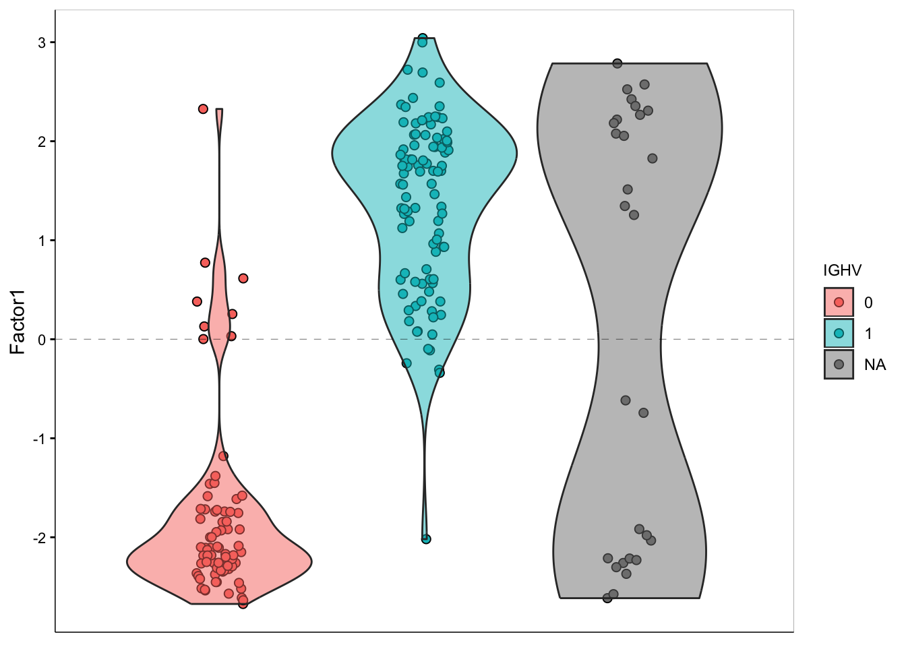
It does seem like our Factor 1 values correlate with presence/absence of IGHV mutation!
7.3. Factor 1’s association with the transcriptomic data modality
From the variance explained plot we know that Factor 1 drives variation across all four of our data modalities. Let’s visualize the mRNA expression changes that are associated with Factor 1 using the plot_weights function again:
plot_weights(
MOFAobject_trained,
nfeatures = 10,
view = "mRNA",
factor = 1
)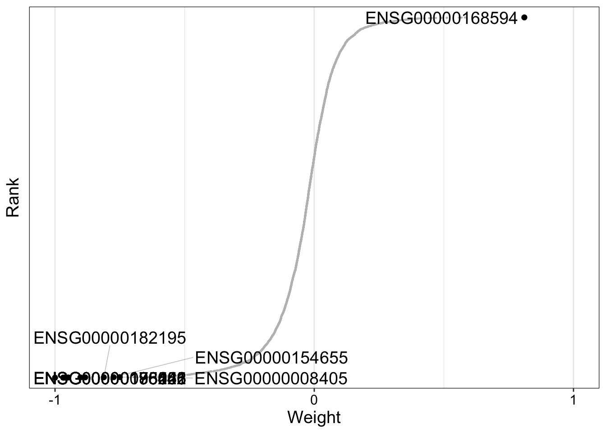
We can see from our generated plot that there are a substantial number of transcripts with weights close to -1 or 1 with respect to Factor 1. It is likely that genes with large positive mRNA expression values are more heavily expressed in samples with IGHV mutation. Let’s verify this assumption.
7.4. Molecular signature clustering for factor 1
Let’s use the plot_data_heatmap function to generate a heatmap of gene expression values against Factor 1 values. Furthermore, we color our heatmap by IGHV mutation status.
plot_data_heatmap(
MOFAobject_trained,
scale = "row",
cluster_cols = FALSE,
cluster_rows = FALSE,
show_colnames = FALSE,
denoise = TRUE,
features = 25,
view = "mRNA",
factor=1
)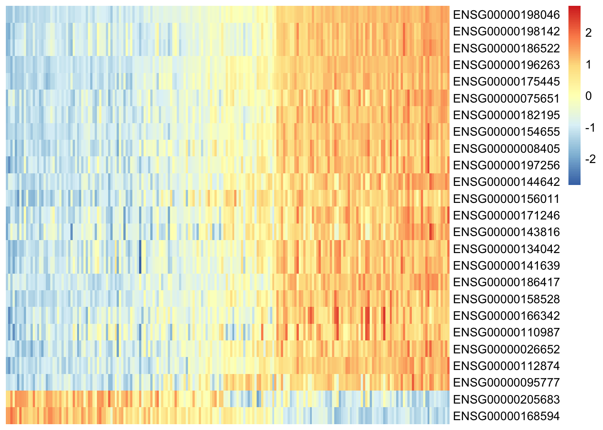
From our heatmap, we can see that various transcripts correlate with high Factor 1 value, and that these samples are also positive for IGHV status - our assumption is confirmed!
8. Summary
This concludes my walkthrough of applying the MOFA2 package to perform factor analysis on multiomics data. Here, we applied factor analysis to multiomics data to integrate and analyze relevant features related to different ’omic subtypes as well as patient metadata of interest. A big thank you again to Alex Gurbych from blackthorn.ai and the authors of the MOFA2 package. I look forward to covering more tutorials involving multiomic data analysis and precision medicine in the future.